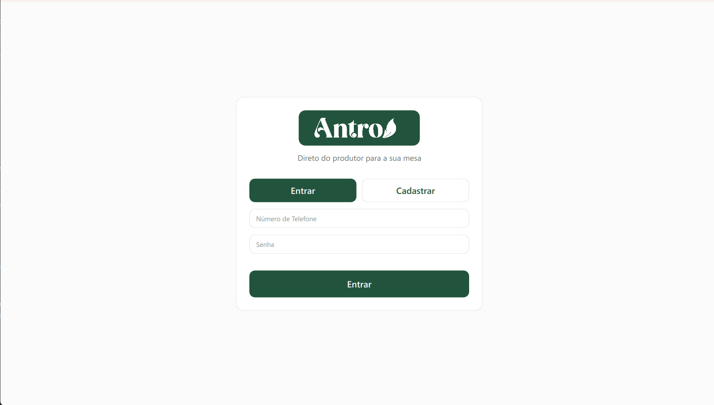
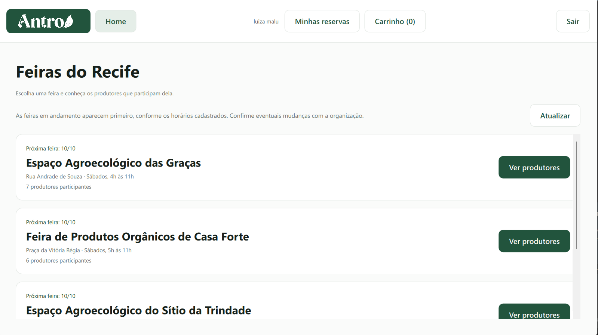
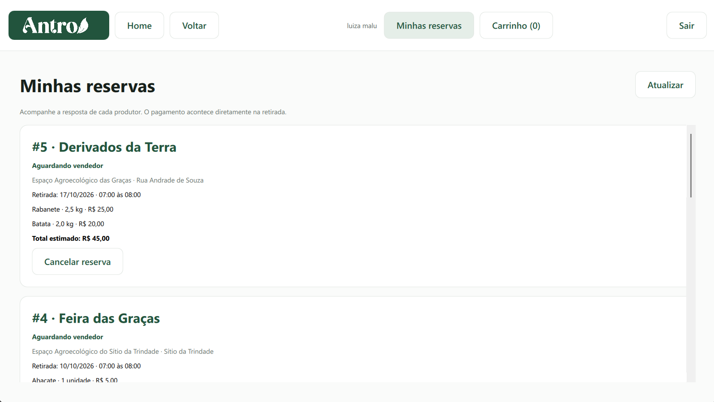
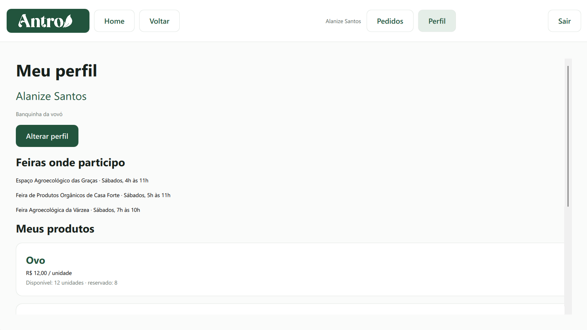
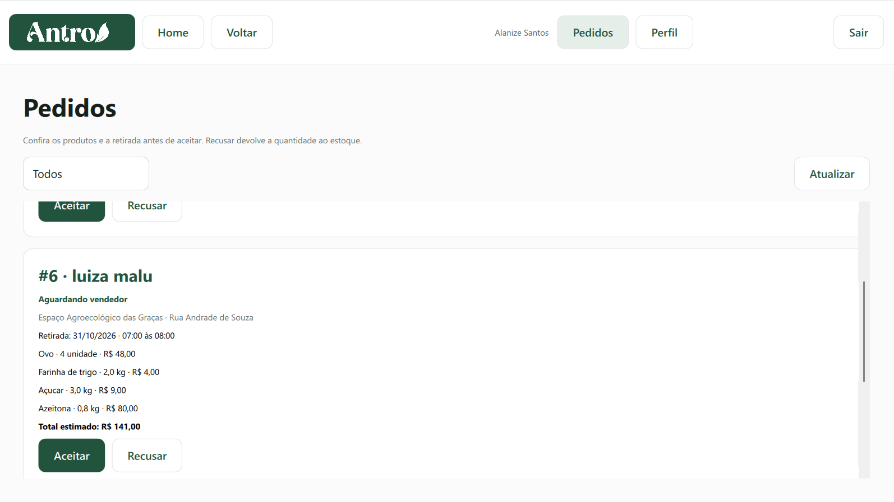

Cadastro e autenticação
O sistema permite o cadastro e login de consumidores e feirantes, apresentando funcionalidades específicas para cada perfil.
Uma plataforma para aproximar consumidores e produtores de feiras agroecológicas.
O Antro é uma aplicação voltada para feiras agroecológicas, desenvolvida com o objetivo de facilitar a interação entre consumidores e feirantes.
Por meio do sistema, consumidores podem visualizar feiras, consultar produtos disponíveis, realizar reservas e acompanhar seus pedidos. Os feirantes podem gerenciar os produtos oferecidos, controlar preços e estoque e acompanhar as reservas realizadas pelos consumidores.
O sistema permite o cadastro e login de consumidores e feirantes, apresentando funcionalidades específicas para cada perfil.
Consumidores podem visualizar as feiras cadastradas e acessar os produtores e produtos disponíveis em cada uma delas.
Os produtos disponíveis podem ser consultados com informações como nome, preço, tipo de venda e disponibilidade.
O consumidor pode adicionar produtos à sacola, selecionar uma data e horário de retirada e realizar uma reserva.
Feirantes podem cadastrar produtos, definir preços, controlar estoque e selecionar as feiras das quais participam.
Os pedidos podem ser acompanhados tanto pelo consumidor quanto pelo feirante, permitindo aceitar, cancelar, recusar ou registrar a retirada das reservas.
Algumas das principais telas desenvolvidas para o Antro.





A interface gráfica foi desenvolvida em QML e se comunica com os controllers escritos em C++. Os controllers fazem a ligação entre as ações realizadas pelo usuário e as regras do sistema, enquanto os serviços são responsáveis pela lógica e pelo acesso ao banco de dados.
Confira uma demonstração do funcionamento do Antro.